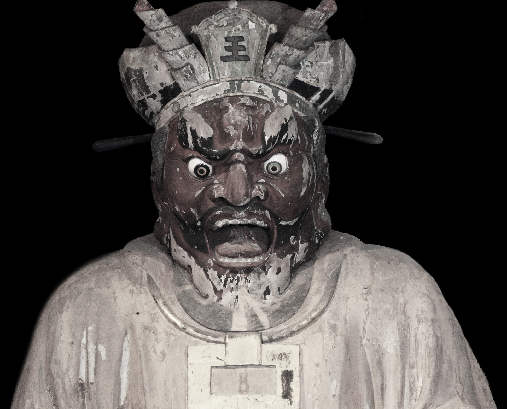

圓應寺縁起 History 寺院历史
円応寺は、建長二年（1250年）に造られた閻魔大王を本尊とするお寺です。建長寺開山大覚禅師の弟子であり、建長寺第九世の知覚禅師が開山（最初の住職）です。閻魔堂、十王堂とも呼ばれ、亡者が冥界において出合う「十王」を祀っています。
円応寺は初め見越嶽（大仏様の近く）にありましたが、鎌倉幕府滅亡後足利尊氏が由比ヶ浜に移築しその後、江戸時代の元禄十六年（1703年）に起きた大地震後に現在の地に移りました。
本尊の閻魔大王座像（国重要文化財）は、仏師「運慶」作と伝わります。運慶は頓死をして閻魔大王の前に引き出されましたが、閻魔様の「汝は生前の慳貪心（物惜しみし、欲深いこと）の罪により、地獄に落ちるべきところであるが、もし汝が我が姿を彫刻し、その像を見た人々が悪行を成さず、善縁に趣くのであれば、汝を娑婆に戻してやろう。」といわれ、現世に生き返った運慶が彫刻したと言われています。運慶は生き返った事を喜び、笑いながら彫像したため閻魔様のお顔も笑っているように見えることから、古来「笑い閻魔」と呼ばれています。又、山賊から守る為赤ちゃんを飲み込んだ事から「子喰い閻魔」その後その赤ちゃんが無事に成長出来た為「子育て閻魔」と呼ばれています。
Ennoji was founded in 1250 and enshrines Enma Daio (the King of Hell) as its principal deity. The temple was established by Chikaku Zenji, the ninth head priest of Kenchoji, a disciple of the great monk Daikaku Zenji.
Originally located near the Great Buddha, the temple was moved to Yuigahama after the fall of the Kamakura shogunate, and again to its current location after the great earthquake of 1703.
The principal statue of Enma Daio (an Important Cultural Property) is said to have been carved by the master sculptor Unkei. Legend tells that Unkei fell into a sudden death and was brought before Enma, who offered him a second chance at life if he would carve his likeness. Unkei carved the statue joyfully upon returning to life, which is why Enma's face appears to be smiling — earning the nickname "Laughing Enma."
圆应寺建于建长二年（1250年），供奉阎魔大王为本尊。寺院由建长寺第九代住持知觉禅师开山，是建长寺开山大觉禅师的弟子。
寺院最初位于见越岳（大佛附近），镰仓幕府灭亡后迁至由比滨，元禄十六年（1703年）大地震后移至现址。
本尊阎魔大王坐像（国家重要文化财产）相传为佛师运庆所作。传说运庆死后被带到阎魔面前，阎魔允许他重返人间，条件是为其雕刻像。运庆因重获生命而喜笑颜开，因此雕像面带微笑，古来被称为"笑阎魔"。

仏教における十王 Buddhism & the Ten Kings 佛教中的十王
お釈迦様は死後の世界は説きませんでした。しかし「死」という事実は仏教の出発点でもあります。死への恐怖があるかぎり平安な人生は送れません。仏教において死への恐怖を解決し、充実した人生を送るために「十王」は存在します。
十王とは、亡者が冥界において出合う十人の王のことです。亡者は冥界において七日ごとに七回、さらに百ヶ日、一周忌、三回忌の合計十回、それぞれの王の取り調べを受けます。
亡者はまず、初七日の秦広王、二・七日の初江王、三・七日の宋帝王、四・七日の五官王と、生前の罪を取り調べられます。その結果により五・七日（三十五日）の閻魔大王が、六道（天上、人間、修羅、畜生、餓鬼、地獄）のどこに生まれ変わるかを決定します。
While the Buddha did not speak of the afterlife directly, death is the very starting point of Buddhist teaching. As long as we fear death, we cannot live in peace. The Ten Kings exist to help resolve that fear and guide us toward a more fulfilled life.
The Ten Kings are ten judges the deceased encounters in the underworld. The soul faces each king in turn — seven times at seven-day intervals, then at 100 days, one year, and three years after death.
释迦牟尼虽未直接阐述死后世界，但"死亡"是佛教的出发点。对死亡的恐惧使人无法安心生活，十王的存在正是为了帮助解决这种恐惧，引导人们过上充实的生活。
十王是亡者在冥界依次遇见的十位审判者。亡者在死后每七天接受一次审判，共七次，另加百日、一周年、三周年，共十次审判。
仏教（閻魔様）は全ての人を救いたいと願っています。前生で悪業を行い地獄の苦しみを受けている者でも自らの罪を認め心から懺悔すれば、閻魔様はお地蔵様に身を変えて地獄の底まで救いに行きます。 Buddhism — and Enma — wishes to save all beings. Even those suffering in hell for past misdeeds can be saved if they sincerely acknowledge and repent their sins. Enma then transforms into Jizo and descends to the depths of hell to rescue them. 佛教（阎魔王）希望拯救所有众生。即使是因前世恶业而在地狱受苦的人，只要真心认罪悔改，阎魔王便会化身地藏菩萨，下至地狱深处救度他们。
十三仏信仰においてはお地蔵様と閻魔様は一体のものであるとされています。命あるものはいつか必ず死を迎えます。同じ人生などありえません。しかし死は等しくおとずれます。 In the tradition of the Thirteen Buddhas, Jizo and Enma are understood as one. All living beings must face death — no two lives are alike, yet death comes equally to all. 在十三佛信仰中，地藏菩萨与阎魔王被视为一体。所有有生命的存在终将面对死亡——没有两条人生完全相同，但死亡平等地降临于所有人。
懺悔文 Prayer of Repentance 忏悔文
私達は毎日の生活において知らず知らずのうちに罪を犯しているのではないでしょうか、なにげない一言が人をキズつけているかも知れません。それは私達に貪瞋癡の三毒がそなわっているからです。 In the course of daily life, we often commit wrongs without realizing it. A careless word may hurt someone. This comes from the three poisons within us: greed, anger, and ignorance. 在日常生活中，我们常常在不知不觉中犯下过错，随口说出的一句话可能伤害他人。这是因为我们内心存在贪、嗔、痴三毒。